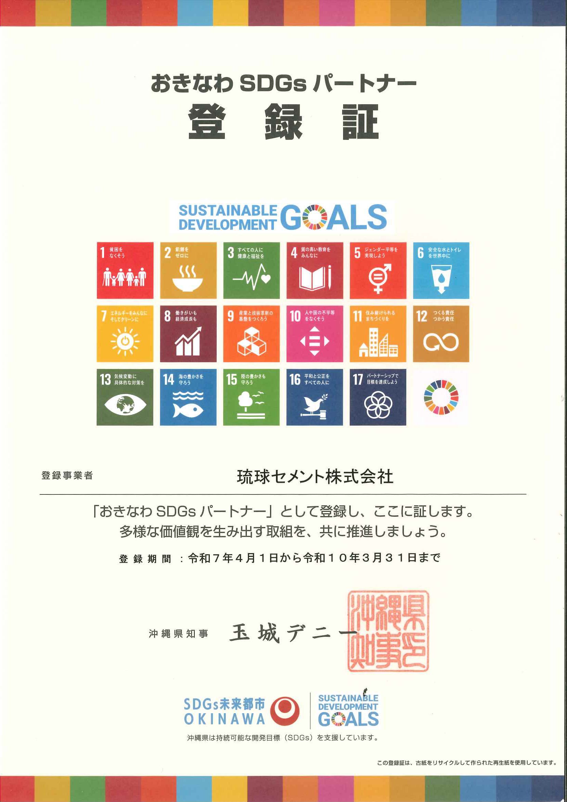

経営企画課の業務範囲
経営企画課は会社全体を横断的に支える部署です。今日はこのうち4つのテーマを紹介します。
今日のテーマ
経営企画課が担当する4つの領域を学びます。最後にクイズゲームで理解度チェック！
QC活動・ザ・チャレンジ発表大会の仕組みと進め方
SDGsパートナー・サンゴプロジェクト・リサイクル
CN推進委員会と2050年CN実現に向けた取り組み
HP・会社案内・CM・カレンダーの企画と広報戦略
小集団活動
QC活動とザ・チャレンジ発表大会
小集団活動とは
職場のメンバーが少人数のグループ（サークル）を作り、自分たちで課題を見つけ、改善に取り組む活動です。
職場の問題を自分たちの手で解決し、業務品質・効率を向上させる
同じ職場の3〜10名程度でサークルを結成
1年間で計画→実行→発表まで完結
ポイント：「上から言われてやる」のではなく、現場の声から改善を生むボトムアップの活動です。
ザ・チャレンジ発表大会とは
1年間の活動成果を全社に向けて発表するイベントです。
経営企画課の役割：事務局として参加サークル支援・審査基準整備・大会運営を担当します。
活動の5つの型
従来の3つの型に加え、2つの新しい型があります。
目に見えている問題に対して、要因解析を行って解決するアプローチ
新しい業務や、従来のやり方の変更だけでは不十分な場合の取り組み
対策のポイントが見えており、目標達成の対策がほぼ見えている場合
部署をまたぐ問題について、従来の手法に囚われないボトムアップ視点からの提案
業務上の取り組みや部署特有の業務を全社的に共有する発表
PDCAサイクルと活動の進め方
- 決められたステップに厳密に従う
- 発表資料も固定フォーマット
- 型にはめる必要がある
- PDCAサイクルに従えばOK
- プレゼン内容に合った手順で進行可能
- 発表資料の構成も自由
QC7つ道具
データを分析し、問題の原因を特定するための基本ツールです。
改善効果の見せ方
発表で説得力のある効果を示すために押さえるべき3つのポイント。
「改善した」ではなく「不良率が12%→3%に低減」のように定量的に
「年間○万円のコスト削減」「△時間の工数削減 × 時間単価 = □円」
QC7つ道具で収集・分析したデータをグラフ・図表で可視化
NG例：「改善した」「良くなった」→ OK例：「○○が△%改善し、年間□万円の効果」
SDGs
持続可能な開発目標と琉球セメントの取り組み
SDGsとは
SDGs（Sustainable Development Goals）は、2015年に国連で採択された2030年までに達成を目指す17の目標です。
貧困・環境・平和など、地球規模の課題を解決するための17のゴールと169のターゲット
本業を通じた社会課題の解決、環境負荷の低減、地域社会への貢献が求められている
ポイント：SDGsは「やっておくといいこと」ではなく、企業の経営戦略そのものに組み込む時代です。
琉球セメントのSDGsへの取り組み
創業の志「郷土の資源で郷土をつくる」に基づき、様々な取り組みを行っています。
沖縄県認定のSDGs推進パートナー制度に登録
OISTと連携。セメント1袋2円を寄付しサンゴ養殖に貢献
廃棄物を資源に変え循環。家電リサイクルも展開
沖縄の石灰石で地元のインフラを支える

カーボンニュートラル
2050年CN実現に向けた琉球セメントの挑戦
カーボンニュートラルとは
CO2などの温室効果ガスの排出量と吸収量を差し引きゼロにすること。日本は2050年までの達成を宣言しています。
セメント製造はCO2排出が多い業種。原料由来が約60%、エネルギー由来が約40%を占める
焼成工程の非化石比率28%、CO2排出量15%削減（対2013年度）が業界目安
キーワード：化石燃料（石炭・重油）の代わりに廃棄物や再生可能エネルギーを使うことが鍵です。
当社のCN推進体制と取り組み
カーボンニュートラル推進委員会が中心となり、全社的に推進しています。
41.4%
化石エネルギー代替率
（業界目標 28%）
15.8%
CO2削減率（対2015年度）
（業界目標 15%）
- 廃棄物・有価物の受入拡大（熱エネ系代替）
- LNG（液化天然ガス）転換を5社で共同検討
- 鉱山での陸上風力発電の風況調査
- CN関連設備に2030年までに50億円以上を投資
宣伝広告
誰に、何を、どう届けるか
広告・協賛活動の全体像
琉球セメントはスポーツ・地域イベント・メディアなど幅広い分野で協賛・広告活動を行っています。
- マラソン・トライアスロン
- ツール・ド・おきなわ
- LA TIDA ハンドボール
- プロ野球・学童野球
- てだこまつり（特別協賛）
- 海洋博花火大会
- 首里城復興祭・名護まつり
- 産業まつり・離島フェア
- 年賀スポットCM
- 新聞の年賀広告
- 業界誌・住宅新聞
- オペラ「沖縄物語」
- 森と湖に親しむ旬間
- 琉装画カレンダー
- 会社案内・HP
- クリアファイル
経営企画課が担う広告業務
経営企画課はこれらの協賛・広告の稟議・管理を担当しています。
年間を通じて各種協賛の稟議書を作成・管理。67期だけでも26件以上の協賛案件を処理
HP・会社案内・CM・カレンダーなど対外的な制作物の企画立案と進行管理
ポイント：広告・協賛活動は地域とのつながりを深め、「沖縄を支える企業」としての認知を高める重要な役割を果たしています。
まとめ
経営企画課が担う4つの領域を学びました。
小集団活動 — 5つの活動型（提案型・体験活動が新設）、PDCAサイクルに基づく柔軟な活動へ
SDGs — おきなわSDGsパートナー登録、OISTサンゴプロジェクト、リサイクル事業で社会に貢献
カーボンニュートラル — CN推進委員会が中心。2030年に化石エネ代替率41.4%、CO2削減15.8%を目標
宣伝広告 — ターゲット別に最適な媒体とメッセージで企業価値を伝える
覚えておいてほしいこと：これらはすべて「沖縄の未来をつくる」という共通の目的でつながっています。
🎮 クイズに挑戦！
スマホで QR コードを読み取って
「沖縄の街をつくろう」に挑戦しよう！
https://s1998yoshiki-art.github.io/training-quiz-game/
ルール：全20問 ／ 連続正解でコンボ倍率UP ／ スコアに応じて街が成長！